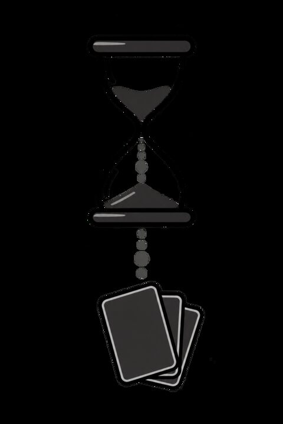
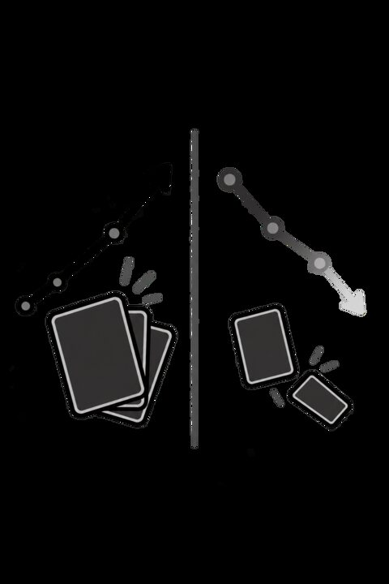
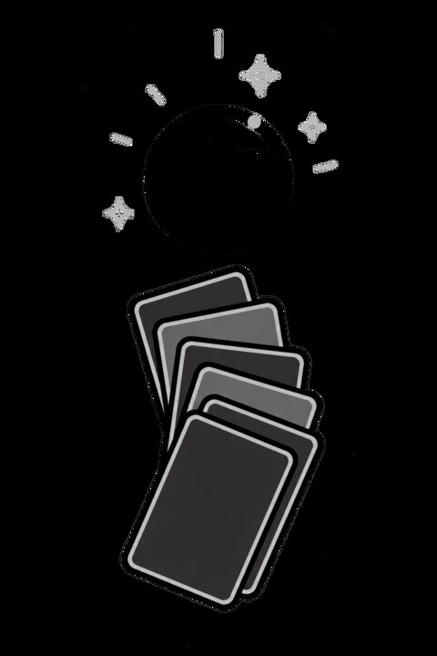
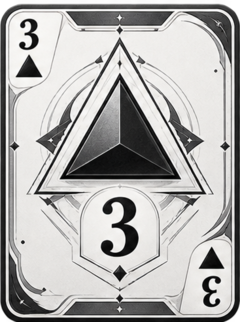
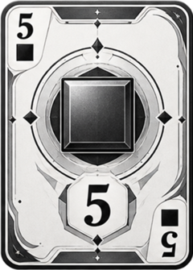
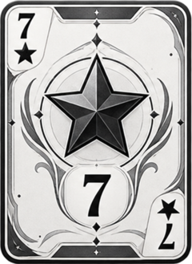
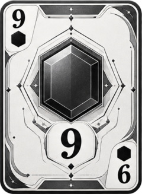
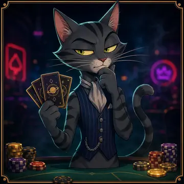
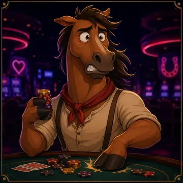

Odak açıkken kum gibi akar. Her an masada bir ele dönüşür, avatarın senin yerine kart çeker.
Odak Masası
Süre kartlara dökülür. Timer açıkken avatarın senin yerine kart çeker ve jeton birikir. Durdurursan el dağılır.
Uygulamadaki üç tanıtım ekranı. Aynı görseller, aynı kurallar.

Odak açıkken kum gibi akar. Her an masada bir ele dönüşür, avatarın senin yerine kart çeker.

Odak sende tutunca kartlar kalır. Mola verince kaybetme ihtimalin yükselir, jetonlar kayar.

Süre dolunca masada ne biriktirdiğin görünür. Odaklandıkça eller açılır, jetonlar birikir.
İskambil değil. Daire, üçgen, kare, yıldız, altıgen.




Sade ekranlar. Gerekli olanlar.


1 dakikadan 90 dakikaya. 25 dakikalık klasik oturum, kısa ve uzun mola. Süre bitince ses.
Ahşap masa, iki kart, timer. Odak açıkken kazanma oranı yüksek, durunca düşük.
Jeton sıfıra inerse oturum biter. Dikkat dağılınca masa boşalmaz; karakterin kaybeder.
Misafir olarak hemen otur. İstersen e-posta veya Google ile hesap bırak.
Global sıralama, seri, geçmiş oturumlar. Rastgele masada başkalarıyla aynı elde otur.
Avatar, ülke bayrağı, çip bakiyesi, istatistik. Ses ve bildirim ayarları cihazda kalır.